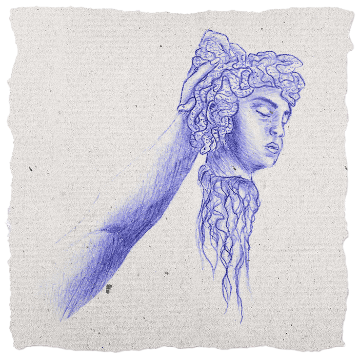

1

Medusa
Dubbele standaarden en de demonisering van vrouwen met macht.
Slachtoffer of monster? De mythe van Medusa vertelt het verhaal van een jonge vrouw die gestraft werd voor haar eigen lijden, waarnaar de wereld haar veranderde in een symbool van wraak en haat. In de eerste aflevering bespreken wij de stigmatisering van slachtoffers en de reactie van de samenleving op zij die zich hiertegen verzetten.